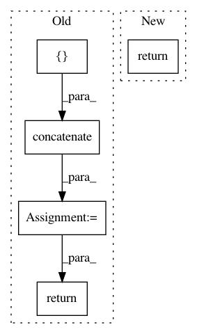

538f969f17ef232c75588dfa2a3157bd97aae45d,librosa/beat.py,,_beat_tracker,#,39
Before Change
b = [int(bestendx)]
backlink = backlink.astype(int)
while backlink[b[-1]] >= 0:
b = numpy.concatenate((b, [backlink[b[-1]]]), axis=0)
pass
return b[::-1]
def onset_estimate_bpm(onsets, sampling_rate=8000, hop_length=32, start_bpm=120):
auto_correlation_size = 4.0
After Change
pass
b.reverse()
return numpy.array(b)
def onset_estimate_bpm(onsets, sampling_rate=8000, hop_length=32, start_bpm=120):
auto_correlation_size = 4.0
In pattern: SUPERPATTERN
Frequency: 3
Non-data size: 5
Instances
Project Name: librosa/librosa
Commit Name: 538f969f17ef232c75588dfa2a3157bd97aae45d
Time: 2013-02-11
Author: brm2132@columbia.edu
File Name: librosa/beat.py
Class Name:
Method Name: _beat_tracker
Project Name: dnouri/skorch
Commit Name: 892065c8339f9c20d36127645ba3ae169577f47b
Time: 2020-06-27
Author: b.bossan@gmail.com
File Name: skorch/classifier.py
Class Name: NeuralNetClassifier
Method Name: predict
Project Name: craffel/mir_eval
Commit Name: a710c9d9805e462f33d2ea2a6ae96626f5a5f84b
Time: 2013-10-22
Author: brm2132@columbia.edu
File Name: mir_eval/util.py
Class Name:
Method Name: import_segment_boundaries